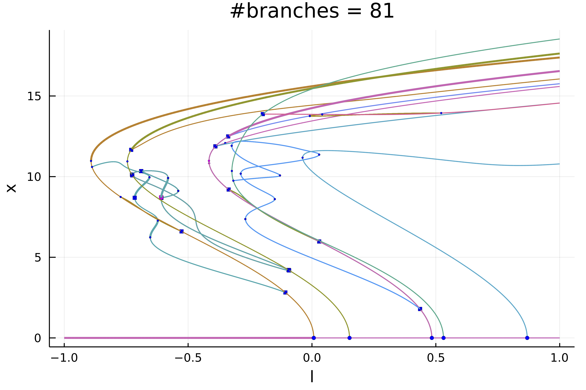
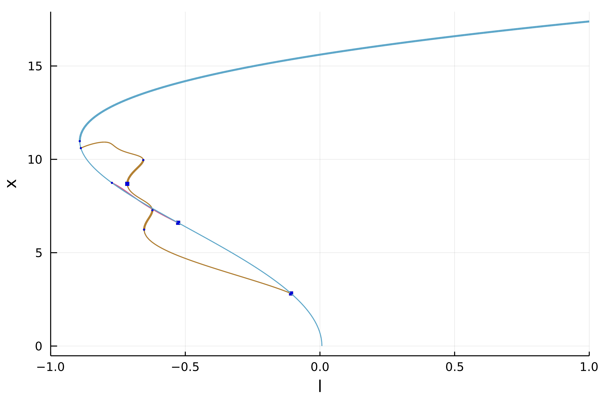

🟡 1d Swift-Hohenberg equation (automatic)
In this tutorial, we will see how to compute automatically the bifurcation diagram of the 1d Swift-Hohenberg equation. This example is treated in pde2path.
\[-(I+\Delta)^2 u+\lambda\cdot u +\nu u^3-u^5 = 0\tag{E}\]
with Dirichlet boundary conditions. We use a Sparse Matrix to express the operator $L_1=(I+\Delta)^2$. We start by loading the packages:
using Reviseusing SparseArraysimport LinearAlgebra: I, normusing BifurcationKitusing Plotsconst BK = BifurcationKitBK.set_plot_backend!(BK.BK_Plots()) # hideWe then define a discretization of the problem
# discretisationN = 200l = 6.X = -l .+ 2l/N*(0:N-1) |> collecth = X[2]-X[1]# define a normconst _weight = rand(N)normweighted(x) = norm(_weight .* x)# boundary conditionΔ = spdiagm(0 => -2ones(N), 1 => ones(N-1), -1 => ones(N-1) ) / h^2L1 = -(I + Δ)^2# functional of the problemfunction R_SH!(out, u, par) (;λ, ν, L1) = par out .= L1 * u .+ λ .* u .+ ν .* u.^3 - u.^5end# jacobianJac_sp(u, par) = par.L1 + spdiagm(0 => par.λ .+ 3 .* par.ν .* u.^2 .- 5 .* u.^4)# second derivatived2R(u,p,dx1,dx2) = @. p.ν * 6u*dx1*dx2 - 5*4u^3*dx1*dx2# third derivatived3R(u,p,dx1,dx2,dx3) = @. p.ν * 6dx3*dx1*dx2 - 5*4*3u^2*dx1*dx2*dx3# parameters associated with the equationparSH = (λ = -0.7, ν = 2., L1 = L1)# initial conditionsol0 = zeros(N)# Bifurcation Problemprob = BifurcationProblem(R_SH!, sol0, parSH, (@optic _.λ); J = Jac_sp, record_from_solution = (x, p; k...) -> (n2 = norm(x), nw = normweighted(x), s = sum(x), s2 = x[end ÷ 2], s4 = x[end ÷ 4], s5 = x[end ÷ 5]), plot_solution = (x, p;kwargs...)->(plot!(X, x; ylabel="solution", label="", kwargs...)))We then choose the parameters for continuation with precise detection of bifurcation points by bisection:
opts = ContinuationPar(dsmin = 0.0001, dsmax = 0.01, ds = 0.01, p_max = 1., newton_options = NewtonPar(max_iterations = 30, tol = 1e-8), max_steps = 300, plot_every_step = 40, n_inversion = 4, tol_bisection_eigenvalue = 1e-17, dsmin_bisection = 1e-7)Before we continue, it is useful to define a callback (see continuation) for newton to avoid spurious branch switching. It is not strictly necessary for what follows.
function cb(state; kwargs...) _x = get(kwargs, :z0, nothing) fromNewton = get(kwargs, :fromNewton, false) if ~fromNewton # if the residual is too large or if the parameter jump # is too big, abort continuation step return norm(_x.u - state.x) < 20.5 && abs(_x.p - state.p) < 0.05 end trueendNext, we specify the arguments to be used during continuation, such as plotting function, tangent predictors, callbacks...
args = (verbosity = 0, plot = true, callback_newton = cb, halfbranch = true, )Depending on the level of recursion in the bifurcation diagram, we change a bit the options as follows
function optrec(x, p, l; opt = opts) level = l if level <= 2 return setproperties(opt; max_steps = 300, nev = N, detect_loop = false) else return setproperties(opt; max_steps = 250, nev = N, detect_loop = true) endendThe function optrec modifies the continuation options opts as function of the branching level. It can be used to alter the continuation parameters inside the bifurcation diagram.
We are now in position to compute the bifurcation diagram
diagram = @time bifurcationdiagram(re_make(prob, params = @set parSH.λ = -0.1), PALC(), # here we specify a maximum branching level of 4 4, optrec; args...)After ~700s, you can plot the result
plot(diagram; plotfold = false, markersize = 2, putspecialptlegend = false, xlims=(-1,1), label = "")title!("#branches = $(size(diagram))")
Et voilà!
Exploration of the diagram
The bifurcation diagram diagram is stored as tree:
julia> diagram[Bifurcation diagram] ┌─ From 0-th bifurcation point. ├─ Children number: 5 └─ Root (recursion level 1) ┌─ Number of points: 82 ├─ Branch of EquilibriumCont ├─ Type of vectors: Vector{Float64} ├─ Parameter l starts at -0.1, ends at 1.0 ├─ Algo: PALC └─ Special points:If `br` is the name of the branch,ind_ev = index of the bifurcating eigenvalue e.g. `br.eig[idx].eigenvals[ind_ev]`- # 1, bp at λ ≈ +0.00739184 ∈ (+0.00694990, +0.00739184), |δp|=4e-04, [converged], δ = ( 1, 0), step = 8, eigenelements in eig[ 9], ind_ev = 1- # 2, bp at λ ≈ +0.15163058 ∈ (+0.15157533, +0.15163058), |δp|=6e-05, [converged], δ = ( 1, 0), step = 19, eigenelements in eig[ 20], ind_ev = 2- # 3, bp at λ ≈ +0.48386330 ∈ (+0.48386287, +0.48386330), |δp|=4e-07, [converged], δ = ( 1, 0), step = 43, eigenelements in eig[ 44], ind_ev = 3- # 4, bp at λ ≈ +0.53115107 ∈ (+0.53070912, +0.53115107), |δp|=4e-04, [converged], δ = ( 1, 0), step = 47, eigenelements in eig[ 48], ind_ev = 4- # 5, bp at λ ≈ +0.86889123 ∈ (+0.86887742, +0.86889123), |δp|=1e-05, [converged], δ = ( 1, 0), step = 71, eigenelements in eig[ 72], ind_ev = 5- # 6, endpoint at λ ≈ +1.00000000, step = 81We can access the different branches with BK.getBranch(diagram, (1,)). Alternatively, you can plot a specific branch:
plot(diagram; code = (1,), plotfold = false, markersize = 2, putspecialptlegend = false, xlims=(-1,1))